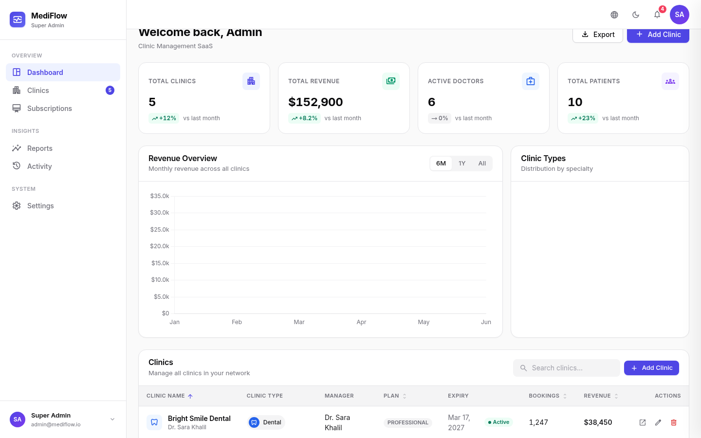

PROJECT / 01
HEALTHCARE SOFTWARE

MULTI-TENANT PLATFORM
Ibn Hayan Healthcare OS
A healthcare platform with centralized administration, isolated clinic operations, appointments, patient queues, permissions, and modular architecture.
GitHub repository